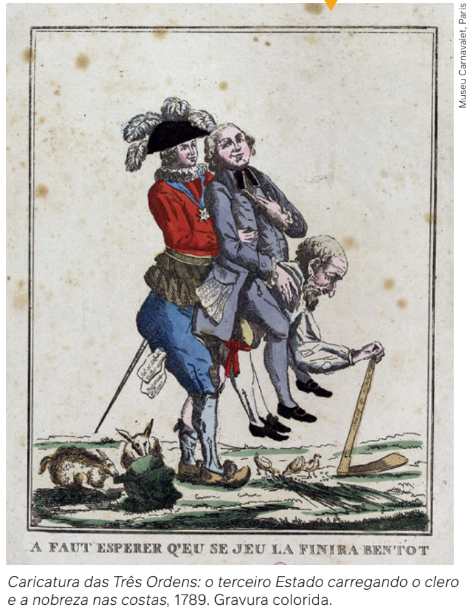
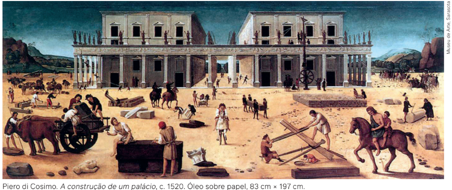
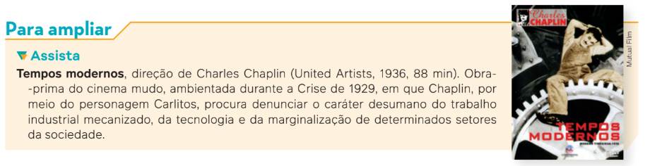
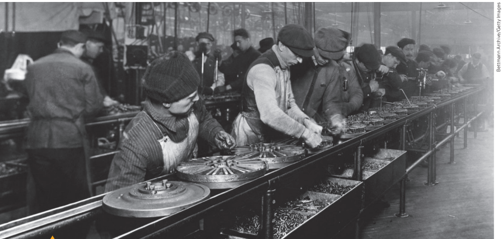
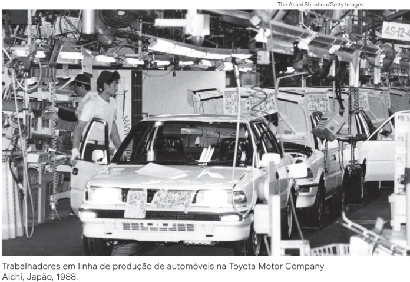
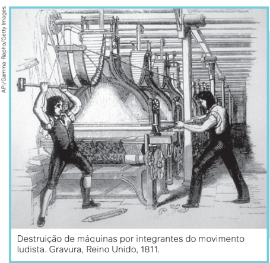
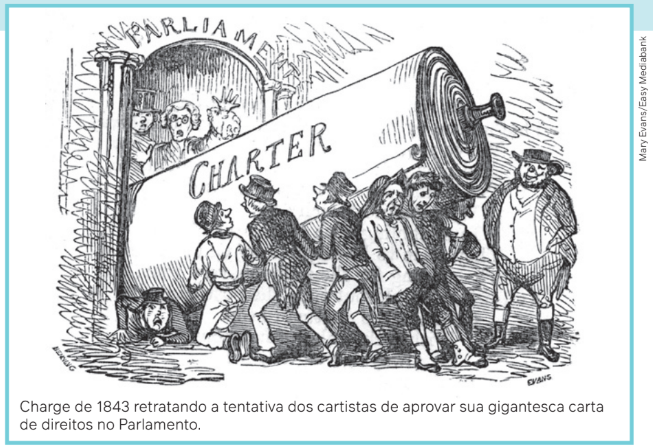
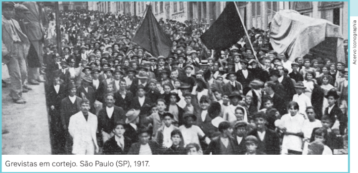
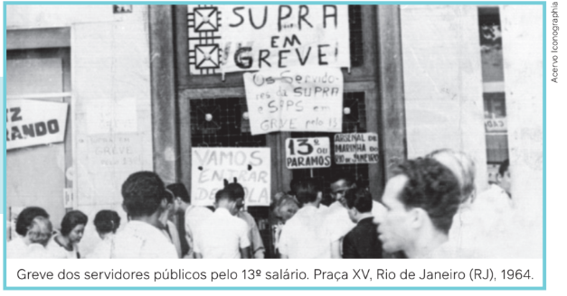

Uma reportagem da revista Carta Capital, de 7 de junho de 2000, tratava do tema das profundas
alterações nas relações de trabalho que ocorriam na passagem para o século XXI. Com
o título “Novos tempos: fim de carreira”, o texto descrevia a situação de um trabalhador inglês
chamado Huser, que, depois de 11 meses trabalhando em Londres como diretor no departamento
de vendas e marketing da bolsa de valores da Suíça, foi dispensado e passou a executar
várias tarefas para sobreviver, tais como pintor de paredes e marceneiro.
A reportagem queria demonstrar que, naquele momento histórico, estava ocorrendo uma
verdadeira revolução no mundo do trabalho, com a extinção de várias carreiras profissionais,
decorrente do crescimento das contratações com jornada de meio período, da redução dos
contratos longos, da proliferação de pequenas empresas e dos chamados freelancers e da
substituição da mão de obra (qualificada ou não) pelas novas tecnologias. Era a tese do
fim de carreira, defendida poucos anos antes pelo economista e sociólogo estadunidense
Jeremy Rifkin (1945-), em uma obra que havia se tornado best-seller, O fim dos empregos
(1996), significando que nesses novos tempos crescia a cada dia o número de pessoas que
não tinha compromissos com qualquer profissão e que a ideia de “trabalhar por vocação”
deveria ser superada.
Pouco depois, no início de 2003, no bairro
de Madureira, Rio de Janeiro, um professor de
Sociologia se deparou com um cartaz bastante
curioso nas mãos de um vendedor ambulante:
“Patrão nunca mais: vende-se máquina de
pizza”. Além da criativa propaganda do
trabalhador informal de rua, a frase refletia os
novos tempos: como os empregos estavam
cada vez mais escassos, era necessário ser
inventivo e ser o seu próprio patrão, não
“dependendo de mais ninguém”. Isso revelava
também o aumento do trabalho precário e flexível.
Outro sinal dos novos tempos no mundo do
trabalho é a formação educacional cada vez mais
voltada ao ensino profissionalizante e ao
desenvolvimento de conhecimentos técnicos básicos,
que tornariam os estudantes aptos a conseguirem
um emprego ao final dessa etapa do ensino básico.
Nessa nova configuração, a educação não é
mais orientada à formação de um sujeito integral,
um cidadão, mas voltada para a formação
profissional, para inserir os jovens em um mercado de
trabalho cada vez mais estreito e precarizado.
Vendedor
ambulante em
terminal de ônibus.
Brasília (DF), 2021.
Neste capítulo, debateremos um pouco melhor
os diversos aspectos que levaram a esse
cenário.
Relações entre trabalho, classes e Estado
Desde as eras mais remotas, os seres humanos precisaram enfrentar a natureza na luta
pela própria sobrevivência. Para garantir esse objetivo, a organização humana deu origem, ao
longo do tempo, a diversas formas de sociedade.
Como você já estudou, ao longo da história, diversos tipos de sociedades se formaram e
desapareceram. Do ponto de vista sociológico, elas podem ser classificadas de acordo com a
presença de algumas características, sendo uma delas a forma de organização para garantia
da subsistência, da continuidade ou, escrevendo de outra forma, da reprodução. Esta se dá,
essencialmente, por meio das formas de organização do trabalho.
Nas diferentes sociedades, ao mesmo tempo que todos os indivíduos procuravam lutar
pela sobrevivência, alguns grupos sociais conseguiam se destacar e impor sua vontade e seus
interesses sobre o restante da coletividade. Assim, dependendo do tipo de organização
econômica que se impunha historicamente em cada sociedade, esses grupos sociais dominantes
poderiam ser identificados como compostos majoritariamente por donos de terras, chefes
militares ou sacerdotes. Esse tipo de dominação entre grupos sociais diferenciados dentro de
uma mesma sociedade não acontecia, por exemplo, entre os povos indígenas encontrados
pelos portugueses a partir de 1500, no Brasil. Mas, se pensarmos na maioria das sociedades
que encontramos ao longo da história, identifica-se essa característica de apropriação do
poder por determinados grupos.
Uma característica importante é que quase sempre havia uma coincidência de interesses
entre o poder político e o poder econômico. Isto é, havia uma correspondência entre os
grupos que governavam a sociedade, determinando as leis que deveriam ser obedecidas por
todos, e aqueles que concentravam os bens do ponto de vista material.
Quando falamos em grupos sociais dominantes e os identificamos com aqueles que
detinham algum tipo de poder, fosse ele militar, econômico, fosse religioso, fica subentendida a
existência de grupos sociais dominados. Os grupos sociais dominantes são compostos quase
sempre de uma parcela minoritária da população, que se destaca exatamente por exercer
algum tipo de poder sobre a maioria. Por isso, podemos chamá-los de elites. O sociólogo e
economista italiano Vilfredo Pareto (1848-1923), no início do século XX, classificou-as como
elites governantes, em oposição às massas não governantes.
Outro italiano, Gaetano Mosca (1858-1941), afirmara
um pouco antes que, em todas as sociedades,
existiam duas classes de pessoas – uma classe que
governa e uma classe que é governada. Mosca e Pareto,
juntamente com outros pensadores, como o inglês
Robert Michels (1876-1936), são os responsáveis por
aquela que ficou conhecida na Sociologia e na Ciência
Política como a teoria das elites.

Karl Marx (1818-1883), por sua vez, desde o século XIX, demonstrara que, na origem da
divisão das sociedades em classes sociais antagônicas (dominantes x dominados), havia um
elemento comum: a propriedade privada dos meios de produção. Ou seja, a existência de
uma classe social que se apoderava, em determinado momento, das terras férteis ou das
riquezas minerais existentes. O poder, a autoridade e a riqueza dessas classes dominantes
poderiam ser mantidos por meio da força – daí a necessidade da constituição de forças
policiais ou de poderosos exércitos, responsáveis pela “manutenção da ordem pública” – ou
por meio do convencimento – para o qual foram fundamentais a criação de leis e de uma ideia
de justiça, assim como a submissão a uma vontade divina, determinada por uma religião.
Segundo um dos principais sociólogos europeus do final do século XIX e início do século XX, o alemão Max
Weber (1864-1920), a afirmação do poder e da autoridade em determinada sociedade é identificada com uma
importante instituição: o Estado. Como o Estado e suas instituições componentes (governo, polícia, justiça) são
reconhecidos por toda a população como responsáveis pela manutenção da ordem, detêm a legitimidade do
monopólio do uso da força, impondo a vontade de determinado grupo sobre a vontade de todos os outros
indivíduos.
O que Weber quis dizer quando se referiu às ideias de legitimidade e de monopólio por parte do Estado em
relação ao uso da força na sociedade é a existência de um reconhecimento geral – ou seja, por parte de todos – de
que esse é o papel que o Estado tem que cumprir em determinadas situações de crise ou de violência.
Diferentes formas de estratificação social
Estratificação social é o modo como as diversas sociedades estão organizadas em estratos ou camadas sociais. Em outras palavras, a forma como os indivíduos estão localizados em determinada posição
em uma sociedade – ou ainda os elementos de pertencimento a um dado grupo social. Esses elementos
podem se basear em critérios econômicos, políticos, sociais e culturais.
Para diversos sociólogos, existiriam diferenças marcantes entre os sistemas de classes modernos, como
entende Marx e, por exemplo, os sistemas de castas, encontrados em sociedades organizadas sob outra forma.
Max Weber dizia que as sociedades não são divididas apenas em classes sociais, mas também em grupos
de status. Os grupos de status diferenciam-se entre si pelo prestígio ou pela honra que gozam na sociedade,
baseados em um estilo de vida reconhecido pelos demais indivíduos. Diferentemente de Marx, Weber argumenta
que os critérios de estratificação não são exclusivamente econômicos, sendo as classes sociais e os
grupos de status formas independentes de estratificação social.
Outro tipo de estratificação existente em algumas sociedades seriam as chamadas castas sociais. O termo
deriva do latim castus, que significa “puro”, tendo sido utilizado primeiramente pelos portugueses ao se referirem
à estratificação social que encontraram na Índia e em outras regiões localizadas no sul da Ásia, no século XV.
As castas caracterizam essencialmente uma organização social baseada em um grupo hereditário,
pertencente a uma ocupação tradicional e classificado em uma escala de pureza religiosa.
As diversas pesquisas antropológicas realizadas na Índia – com destaque para os trabalhos do antropólogo
francês Louis Dumont (1911-1998) – notaram diferentes tipos de linhagens existentes nas castas, variando de
acordo com a região, cada uma delas apresentando uma hierarquia específica. A divisão em castas passa por
modificações nas regiões mais modernas da Índia, penetradas pelo capitalismo.
Durante o século XX, Ambedkar (1891-1956),
advogado oriundo de uma família de “intocáveis”
– aqueles que eram considerados como “impuros”
pelo hinduísmo e que, por esse motivo, não
pertenciam a qualquer casta –, procurou mobilizar
seu grupo de origem, conhecido como dalits, ou
párias, e conseguiu aprovar a Constituição
indiana de 1950, que não reconhece a existência de
castas, mas apenas de cidadãos iguais.
Por fim, outro sistema de estratificação reconhecido
e classificado pelos estudiosos foi a sociedade
estamental, característica do feudalismo
da Europa Medieval. Os estamentos formam um
sistema de estratificação social baseado em hierarquias
econômicas e de prestígio, que dividia a
sociedade em nobreza, alto clero, comerciantes,
artesãos, camponeses livres, baixo clero e servos.
Assim como o sistema de castas, o pertencimento a determinado
estamento apresentava caráter hereditário. Discutindo essa forma de estratificação, Max Weber
mostrou que, nessas sociedades, o poder e o prestígio do estamento condicionavam determinados
monopólios de produção, consumo ou uso de alguns bens, como também a permissão para contrair
matrimônio e o acesso a determinadas atividades e cargos que proporcionavam o exercício do
poder político.
O trabalho na sociedade moderna
Nas sociedades europeias antigas, principalmente na Grécia do Período Clássico, o trabalho
manual era visto pelas elites como algo penoso e detestável. Era algo que cabia apenas
àquelas pessoas consideradas inferiores e que se encontravam nas camadas mais baixas da
sociedade, ou seja, os escravizados.
Nas sociedades feudais da Europa Medieval, o trabalho manual era considerado inferior
ao trabalho intelectual e espiritual. A origem latina do termo trabalho (do latim tripalium,
“instrumento de tortura”), herdada do Império Romano, indica qual era o sentido atribuído a
essa atividade humana.
Associar a palavra “trabalho” a castigos, dor, esforço extremo e cansaço insuportável
permaneceu na cultura europeia até o século XVIII, segundo o historiador Edgar de Decca
(1946-2016). O termo foi relacionado à pobreza e à miséria, sendo que trabalho e pobreza
apresentam a mesma origem etimológica nas línguas grega e alemã.
As grandes mudanças sociais que começaram a ocorrer no continente europeu a partir do
século XV modificaram a visão sobre o trabalho, passando a associá-lo a algo positivo. Assim,
aos poucos, ele passou a ser uma das principais preocupações dos pensadores iluministas,
que caracterizavam o trabalho (manual e intelectual), as técnicas, a ciência e a mecânica como
importantes atos humanos que ajudam a transformar a natureza.
Esse entendimento foi se consolidando na gestação da sociedade moderna europeia, a
partir da ascensão do capitalismo e de sua base teórica, o liberalismo. O pensador inglês John
Locke (1632-1704), por exemplo, definiu o trabalho como a origem de toda a propriedade; já o
economista escocês Adam Smith (1723-1790) o identificou como a origem de toda a riqueza
produzida. Com base nessas concepções liberais, Karl Marx, no século XIX, apresenta a
formulação do conceito de trabalho como a essência da própria existência humana. Ele
argumentava que a riqueza produzida historicamente em todas as sociedades foi obra das
classes sociais que vivem do trabalho.

Émile Durkheim (1858-1917), também no século XIX, apresenta uma definição bastante distinta
de Marx. Com o conceito de divisão social do trabalho, ele associa a ideia de trabalho ao
nível de especialização entre os indivíduos em determinada sociedade. Essa especialização
assume grande complexidade nas sociedades industriais, constituindo o que Durkheim denomina
de solidariedade orgânica.
Solidariedade orgânicaorgânica é a divisão social do trabalho típica das sociedades industriais,
nas quais essa divisão é diferenciada e complexa e os indivíduos estão juntos porque
fazem coisas diferentes – são interdependentes.
Essa cooperação dada pela divisão profissional do trabalho, na definição de Durkheim,
como se pode perceber, é antagônica à ideia de conflito social que está presente nas formulações
de Marx, como o conceito de luta de classes.
Finalmente, Max Weber, como vimos no capítulo anterior, ao estudar as origens do
capitalismo, partindo de distintos pressupostos teóricos, apresentou outro tipo de formulação,
refletindo como a Reforma Protestante contribuiu para a mudança na concepção de trabalho.
Na visão do segmento cristão protestante analisado por Weber, o trabalho passa a ser visto
como um fundamento da vida humana, interpretado como uma virtude e um dos caminhos
para a salvação.
Mobilidade social
Mobilidade social significa a possibilidade que um indivíduo tem de mudar de posição
social, de status ou de poder dentro da sociedade.
Pensando nesse conceito, observe que, nas sociedades estratificadas que utilizamos como
exemplo neste capítulo – considerando a extrema rigidez do sistema de castas tradicional ou
do sistema de estamentos que existia na sociedade feudal –, a mobilidade social pode ser
entendida como inexistente, por ser dada apenas pela hereditariedade.
No sistema capitalista de classes, entretanto, existem dois tipos de mobilidade social:
a mobilidade social vertical e a mobilidade social horizontal. A primeira ocorre quando os
indivíduos mudam sua posição social de forma ascendente ou descendente. Quando os
indivíduos, por exemplo, ganham heranças ou acertam na loteria, ou ainda quando adquirem
status e prestígio, sua mobilidade social é ascendente. Nas diversas sociedades capitalistas,
reconhece-se a educação escolar como a forma mais frequente de mobilidade social vertical
ascendente. Outro exemplo de mobilidade ascendente se dá pelo matrimônio. A mobilidade
social descendente é exatamente o oposto do que descrevemos aqui, podendo ocorrer, por
exemplo, pelo fracasso de um indivíduo nos negócios, com a consequente perda de seus bens.
Já a mobilidade social horizontal ocorre, por exemplo, por meio do deslocamento
geográfico, como aconteceu no Brasil, sobretudo entre as décadas de 1930 e 1970, quando
muitos imigrantes da Região Nordeste migraram para as capitais da Região Sudeste do país em
busca de melhores condições de vida e de emprego. Esses casos, apesar de característicos de
mobilidade social horizontal, acabam por representar também, muitas vezes, uma mobilidade
social vertical, pois a mudança do meio rural para o urbano implica, em geral, o aumento da
renda do migrante em relação à realidade em que vivia anteriormente.
Na cidade, por sua vez, apesar do maior custo de vida, aumentam também as
possibilidades de acesso à escola formal e à qualificação profissional, fazendo com que o
indivíduo possa “subir um ou mais degraus” em relação às condições de vida que ele tinha até
então. Quando essas mudanças ocorrem entre as gerações de uma mesma família, os
cientistas sociais descrevem esse tipo de fenômeno como mobilidade social intergeracional.
A socióloga Celi Scalon demonstrou que em nosso país as chances de o filho de um
trabalhador não qualificado – como um porteiro de edifício – conseguir se formar e trabalhar
como um profissional qualificado – como um médico, por exemplo – é 133 vezes menor que as
chances do filho deste último. Por sua vez, se o filho do trabalhador não qualificado for negro ou
do sexo feminino, suas chances diminuem ainda mais. Assim, podemos dizer que a categoria
de mobilidade social deve ser analisada em conjunto com uma série de outros aspectos, tais
como as citadas diferenças de gênero e raça.
Podemos observar que todas as sociedades são estratificadas de diferentes maneiras e
que elas têm uma profunda relação com as desigualdades sociais, porque estão relacionadas
à divisão social do trabalho e à distribuição do poder. A ideia de mobilidade social, nesse
sentido, deve ser entendida como sendo restrita, presente apenas e parcialmente no sistema
de classes, característico das sociedades capitalistas.
Formas de organização do trabalho na sociedade capitalista
Como já estudamos anteriormente, a principal divisão do trabalho na sociedade capitalista
se dá entre a classe trabalhadora, que pode ser chamada de proletariado, e a classe
proprietária, representada pela burguesia. Enquanto os primeiros são aqueles que produzem a riqueza
por meio da sua força de trabalho, fazendo com que a sociedade reproduza a si mesma (ou
seja, que as famílias se constituam, que pessoas se alimentem, que se locomovam, tenham
lazer, entre outras atividades), os segundos são os donos dos meios de se produzir a riqueza –
ou seja, os meios de produção –, como as fábricas, o comércio e as terras férteis.
Por ora, o que nos importa é a compreensão de alguns aspectos do funcionamento da
sociedade capitalista. Vamos, então, nos ater ao grande momento de consolidação e superação
das formas anteriores de organização das relações de trabalho. Isso ocorre com a Revolução
Industrial, que se expandiu da Inglaterra para diversas partes do mundo no século XIX, como
vimos no capítulo anterior.
Nesse contexto, as fábricas se multiplicavam, trazendo modificações estruturais nas
relações sociais até então existentes, incluindo as relações de trabalho. Nesse processo de
mudanças, as manufaturas, nas quais o trabalhador tinha pleno domínio e ciência do seu ofício,
manipulando de forma artesanal e controlando o produto do seu trabalho, foram sendo
gradualmente substituídas por máquinas no processo de industrialização. Nas indústrias,
diferentemente das antigas manufaturas, o trabalhador vai perdendo aos poucos o
conhecimento e o controle da mercadoria que ele produz, pois se torna responsável pela
produção de apenas uma parte dela. Uma das características da produção industrial é a
introdução de máquinas responsáveis por parte do processo produtivo, assim como a divisão
de tarefas entre os trabalhadores, conhecida como linha de produção.
Na passagem do século XIX para o século XX, a organização do trabalho nas linhas de
montagem passou a ser pensada de forma científica, com o objetivo de melhorar a
produtividade e aumentar os lucros do empresariado. Faz parte desse processo, ao mesmo
tempo, a preocupação de se controlar as tarefas rotineiras
do trabalhador, desde o momento em que acorda
e segue para o trabalho – com a criação de vilas
operárias próximas às fábricas – até a operação
das máquinas.
A produção passa, assim, por um processo de
racionalização que se inicia no século XIX,
estendendo-se pelos séculos XX e XXI. Para diminuir os
custos da produção e aumentar o lucro dos
proprietários, é necessário racionalizá-la ao máximo
– processo que pode variar em suas formas, de
acordo com o contexto mais amplo da organização
da sociedade capitalista como um todo.
Vejamos como se deu esse processo.

O taylorismo e o fordismo
As ideias de organização da produção capitalista, que vieram a ser conhecidas como gerência, ou
administração científica, têm origem em uma obra de 1911, Princípios de administração científica, escrita
pelo engenheiro mecânico estadunidense Frederick Winslow Taylor (1856-1915). Acompanhando leituras
das elites dominantes dessa época, Taylor julgava o trabalhador como um indivíduo preguiçoso – de forma
natural ou intencional – e incapaz intelectualmente. Desse modo, ele defendia uma separação radical entre o
trabalho intelectual, que caberia à gerência, e o trabalho manual, a cargo do operário. Enquanto o primeiro
pensa, concebe o processo de trabalho como um todo, o segundo apenas executa o que é determinado para
ele por seu superior hierárquico.
Para que o trabalho fosse executado de forma econômica e eficaz, obtendo-se sempre o melhor resultado,
Taylor defendia um controle absoluto e rígido de cada movimento dos trabalhadores durante a produção da
mercadoria. Ele ficaria incumbido de executar tarefas fragmentadas, repetitivas, para que a operação das
máquinas fosse realizada no menor tempo possível, cada vez mais rapidamente, à medida que a mão de obra
fosse adestrada naquela função específica. Esse controle do tempo se estendia às pausas para alimentação
durante a jornada de trabalho. Afinal, como você já deve ter escutado em algum momento, tempo é dinheiro!
Na segunda década do século XX, os princípios administrativos defendidos por Taylor, que ficaram
conhecidos como taylorismo, foram apropriados pelo empresário estadunidense e engenheiro mecânico
Henry Ford (1863-1947) nas linhas de montagem das suas fábricas de automóveis, a Ford Motor Company,
fundada em 1903, em um formato de organização da produção que ficou conhecido como fordismo.

Trabalhadores fabris em linha de produção de automóveis. Michigan, Estados Unidos, 1913.
Em 1913, em uma
unidade da Ford
Motor Company,
no estado de
Michigan, nos
Estados Unidos,
pela primeira
vez uma peça foi
fabricada em uma
linha de montagem.
A peça em questão
era um magneto de
volante fabricada
em cinco minutos,
e não mais em 20
minutos, conforme
ocorria no modelo
de produção
anterior.
Os sociólogos Marco Aurélio Santana e José Ricardo Ramalho resumem, dessa forma,
as ideias que articulam e constituem o fordismo:
• Separação entre a concepção e a execução das tarefas, que deveriam ser fragmentadas e rotinizadas.
• Especialização do trabalhador na execução de uma única e simples tarefa, com necessidade cada vez menor de algum tipo de qualificação.
• Disciplina como a principal exigência de qualificação, com o cumprimento das tarefas a serem executadas com as devidas orientação e obediência a normas operacionais previamente definidas.
• Pouca ou nenhuma participação dos trabalhadores na melhoria do processo produtivo e quanto ao seu resultado, ou seja, a mercadoria a ser produzida, recusando qualquer tipo de contribuição intelectual por parte dos operários.
• Produção de bens a custos e preços cada vez menores, com a constituição de bens em massa para um mercado consumidor que também se configurasse como um mercado de massa.
Ford adotou na linha de produção a jornada de trabalho de oito horas diárias, como era
reivindicado pelo movimento operário à época. Na sua visão idealizada de capitalismo, a
produção em série e em massa de mercadorias homogêneas, seguindo um único modelo,
teria um resultado transformador para a sociedade em termos de redução de custos e
possibilidade de consumo: os próprios operários de sua fábrica, que recebiam cinco
dólares por dia trabalhado, poderiam adquirir os modelos mais básicos dos automóveis
que eles próprios montavam.
Linha de montagem e alienação do trabalhador
O papel da máquina é a substituição quase integral do ofício do trabalhador, tanto sob o ponto de vista
físico quanto sob o ponto de vista intelectual, de se “pensar” sobre aquilo que ele está produzindo. Não
estamos dizendo que “a máquina pensa”, mas sim que ela faz com que o trabalhador não precise dessa
faculdade ao utilizá-la, o que acontece de maneira cada vez mais automática. Quanto mais essas máquinas
são aperfeiçoadas, mais elas substituem aqueles que as operam, tornando esse trabalhador um ser “alienado”,
alheio e sem qualquer tipo de controle sobre o que ele próprio produz.
Com a introdução das máquinas, a classe proprietária consegue estabelecer sua “utopia” por um mundo
capitalista ideal, no qual a burguesia é a dona das fábricas, das matérias-primas, dos equipamentos utilizados
na produção e do seu resultado, as mercadorias.
O trabalhador é reconfigurado como apenas mais uma peça dessa engrenagem. Dessa forma, sua mão de
obra, por seu poder cada vez mais reduzido de intervir no processo de produção das mercadorias, passa a ser
permanentemente desvalorizada, “vendida” ao capitalista por um valor bem inferior aos resultados financeiros
proporcionados por seu empreendimento.
O controle rígido do tempo de um trabalhador desqualificado – já que seu trabalho poderia ser realizado
por qualquer indivíduo, praticamente sem qualquer formação – se tornava necessário na execução da rotina
diária das fábricas. Essa desqualificação justificaria os baixos salários inclusive, sendo associada ao alto índice
de desempregados, dispostos a aceitar qualquer vaga que surgisse para substituir quem não conseguisse
executar aquelas tarefas mínimas no tempo exigido e definido cientificamente segundo o método taylorista – ou
para ocupar o lugar de quem se acidentasse ou quem estivesse insatisfeito com as condições de trabalho e se
filiasse a algum sindicato.
Deve-se registrar que a execução dessas tarefas repetitivas ficava cada vez mais simples à medida que as
máquinas fossem mais aperfeiçoadas tecnologicamente.
O toyotismo e a flexibilização do trabalho e da produção
A partir dos anos 1960, principalmente na década 1970, o modelo fordista de produção
começou a entrar em crise, em razão do esgotamento dos mercados por causa da superprodução,
o que levou, consequentemente, à diminuição da lucratividade.
Fazia-se necessário encontrar uma forma de cortar os custos e ampliar as taxas de lucro.
A inspiração veio das teorias neoliberais de Friedrich Von Hayek (1899-1992) e outros pensadores,
mas também da contribuição dos engenheiros japoneses Eiji Toyoda (1913-2013) e Taiichi Ohno
(1912-1990). Enquanto Hayek e seus parceiros afirmavam, desde a década de 1940, que se
deveria substituir o Estado intervencionista por um Estado mínimo, Toyoda e Ohno preconizavam
que a empresa capitalista deveria flexibilizar, enxugar a produção e a mão de obra, terceirizar
e produzir de acordo com a demanda do mercado.
A solução para a crise veio do Japão, por meio de um novo formato de organização da
produção implementado pela montadora de automóveis Toyota Motor Company, fundada em
1937. Esta, após enfrentar um processo de falência na década de 1940, passou a adotar, na
década seguinte ao fim da Segunda Guerra Mundial, um modelo de produção flexível que,
mais tarde, acrescido do avanço das tecnologias de computação e da robótica, possibilitou
uma verdadeira revolução e uma reestruturação nas formas de gestão do trabalho. Por
consequência, permitiu o incremento das taxas de lucro com a superexploração da força de
trabalho – processo que também ficou conhecido como acumulação flexível de capital.
As teorias dos engenheiros japoneses, denominadas de toyotismo, significaram uma solução
para aumentar consideravelmente as taxas de lucro. Essas teorias, implementadas e
popularizadas globalmente a partir das últimas décadas do século XX, modificaram
profundamente as relações de trabalho, dos empresários e do Estado com os trabalhadores,
gerando novas formas de relações sociais. Essas novas práticas relativas à organização do
trabalho se alinharam às demandas propostas pelo neoliberalismo.
No modelo de organização do trabalho toyotista, a produção de mercadorias passa a
organizar-se de forma horizontal, transformando-se em processos de subcontratação e
terceirização de atividades.
TerceirizaçãoTerceirização diz respeito ao processo de extinção de partes da empresa para reduzir
custos. Com isso, parte da empresa é desativada, uma vez que determinadas atividades
são assumidas por outra empresa, seja ela recém-aberta ou que já esteja em atividade
com tal fim. O setor objeto da terceirização pode ser produtivo ou não, ou seja, pode produzir bens materiais ou serviços.
Manifestação contra a aprovação da reforma trabalhista e de leis que facilitem a terceirização. São Paulo (SP), 2015.
Outra característica do toyotismo é que a produção não é mais padronizada, e, sim, realizada em pequenos lotes e com grande variedade de produtos. Ou seja, são mais requintados, adaptando-se aos gostos variáveis do mercado. Isso ocorre porque a produção passa a ser voltada para a demanda do mercado. Assim, não se produz mais conforme a capacidade produtiva da empresa, mas conforme a capacidade aquisitiva do mercado.

No toyotismo, por medida de redução de custos e de aumento de lucro, não há grandes
estoques. Esse fato é viabilizado por informatização e melhoria dos meios de comunicação e
transporte, possibilitando que os fornecedores entreguem as peças necessárias à produção
na hora certa (just in time).
Sob a organização do trabalho toyotista, o trabalhador passa
a desempenhar múltiplas tarefas. Essas tarefas, por sua vez, não
deixam de ser repetitivas. Por esses motivos, alguns sociólogos
classificam o toyotismo como um modelo pós-fordista, isto é, como
uma nova organização do processo de produção que incorpora o
modelo fordista/taylorista, predominante até então. Um trabalhador
na linha de produção da montadora de automóveis Toyota,
por exemplo, na segunda metade do século XX, era obrigado a fazer
20 movimentos a cada 18 segundos, ou seja, um total de 20.600
movimentos por dia. Isso se constitui em uma intensificação ainda
maior do trabalho, pois o operário atuava com várias máquinas.
O pagamento de salários no toyotismo é feito de forma pessoal, por um sistema detalhado
de bonificações e prêmios por produção. O caráter pessoal do pagamento caracteriza-se pela
avaliação do trabalhador, pois a remuneração leva em conta a produtividade, impondo aos
trabalhadores, divididos em grupos, uma fiscalização recíproca. Para obter alta produtividade
e para que possam fazer o controle de qualidade dos produtos durante a produção, os
empregados são submetidos a longos treinamentos, enfatizando-se a corresponsabilidade do
trabalhador com a empresa.
O controle de qualidade é feito imediatamente, durante a própria produção, evitando a
identificação de erros pós-produção. Essa medida decorre de políticas produtivas de
“controle de qualidade total” (CQT), transferindo para os próprios empregados-produtores tal tarefa.
Como consequência, observam-se as seguintes características no mercado de trabalho:
-
• Diminuição do contingente de trabalhadores, processo possibilitado pela subcontratação e pela terceirização.
• Intensificação da exploração do trabalho em razão da polivalência e da multifuncionalidade do trabalhador.
• Aumento da competitividade entre os trabalhadores empregados, pois agora eles recebem de acordo com sua produtividade.
• Aumento do desemprego estrutural, em virtude da intensa automação e da robotização.
O desemprego estrutural é caracterizado pelo desaparecimento do mercado de trabalho de profissões ou
funções em razão do avanço tecnológico, tornando cada vez mais alto e contínuo o percentual da população
desempregada. Um exemplo dessa mudança no mercado de trabalho é o desaparecimento da função de
torneiro-mecânico. Atualmente, as grandes empresas que utilizavam essa profissão possuem robôs e máquinas
computadorizadas que fazem o mesmo serviço. Os caixas eletrônicos e os self-services também fazem parte desse
processo de automação que exclui definitivamente milhares de trabalhadores do mercado.
Consequências sociais das novas formas de organização do trabalho
Como vimos, a lógica dominante hoje no mercado de trabalho é a presença massiva de empresas
terceirizadas ou subcontratadas, cujos trabalhadores recebem salários mais baixos em empregos que não
oferecem as mesmas garantias apresentadas pelas empresas tradicionais. Exemplo disso é o fato de se
priorizar a contratação de pessoas por tempo determinado, com formas de assalariamento precário, como
prestadores de serviços, autônomos, terceirizados, entre outros. Ou seja, para aumentar suas taxas de lucro,
o capitalismo necessita cada vez menos de trabalho estável e cada vez mais das diversificadas formas de
trabalho parcial (ou part-time) e terceirizado, como nos mostram os estudos desenvolvidos por Ricardo
Antunes (1953-) e diversos outros cientistas sociais dedicados aos estudos sociológicos sobre a temática do
trabalho na Sociologia.
O trabalhador que as empresas querem é aquele considerado versátil, capaz de se adaptar às normas de
seu empreendimento. É o trabalhador denominado polivalente, multifuncional, apto a desenvolver as mais
diversas atividades.
A prioridade dada aos contratos de trabalho flexíveis vem acompanhada, por sua vez, pela
desestruturação dos direitos do trabalhador, tentando cortar todas as suas garantias jurídicas e
regulamentações (como aviso-prévio, estabilidade, salário-desemprego, FGTS, 13º salário, férias, entre outras).
A organização e a luta pelos direitos da classe trabalhadora
As regulamentações do trabalho que hoje sofrem ameaças em razão dos
modelos de contrato de trabalho flexíveis e terceirizados têm uma longa história e
estão associadas aos movimentos de luta dos trabalhadores. Como vimos, o período
inicial da Revolução Industrial foi acompanhado pela submissão dos trabalhadores a
condições de trabalho extremamente cansativas e insalubres, com uma carga horária
extensa e sem direitos de qualquer tipo. A mobilização dos trabalhadores como
classe, articulando a organização do movimento sindical, mesmo quando havia
proibição legal nesse sentido, possibilitou que, gradativamente, diversas bandeiras de
luta e pautas de reivindicações do movimento fossem atendidas, com a variação
dessas conquistas historicamente a depender do nível de organização dos
trabalhadores e de conjuntura e contexto político de cada país.
Histórico da conquista de direitos pelos trabalhadores
Século XVIII

A primeira reação de trabalhadores contra o processo de
mudanças que ocorreu na Europa aconteceu de forma
espontânea e desorganizada: embora haja divergências
entre historiadores sobre sua existência, o nome de
Ned Ludd se tornou famoso. Em 1779, ele quebrou as
máquinas de tear a vapor de seu patrão, revoltado por
ter perdido o emprego em função do desenvolvimento
tecnológico. Podemos dizer que Ludd e outros
ingleses da nascente indústria têxtil foram as primeiras
vítimas do desemprego estrutural. Dessa suposta
ação resultariam as primeiras greves de que se tem
notícia, transformando-se no movimento ludista, que
tinha como característica a destruição do maquinário
industrial. Seu auge foi em 1811, mas teve fim no ano
seguinte, quando o parlamento britânico aprovou uma lei
que condenava à pena de morte quem participasse da
destruição de máquinas.
Primeira metade do século XIX
Alguns anos depois, na década de 1830, surge, na Grã-Bretanha, outro movimento operário
conhecido como cartismo. O movimento recebeu esse nome em função da Carta do Povo,
documento enviado ao parlamento britânico com reivindicações políticas, tais como
sufrágio universal masculino, instituição do voto secreto, eleições anuais e condições de
igualdade para a participação política de membros da classe trabalhadora.
O cartismo foi vitorioso em termos de mobilização, conquistando a aprovação de uma
primeira lei de proteção e regulamentação do trabalho infantil, assim como a regulamentação
do trabalho feminino e o limite da jornada de trabalho em 10 horas. Na década de 1860, as
reivindicações do cartismo foram incorporadas à legislação inglesa. Com isso, o movimento
cartista se enfraqueceu, ao mesmo tempo que os sindicatos se fortaleciam cada vez mais,
impulsionados pela organização da classe operária sob inspiração comunista e anarquista e
pela fundação, em 1864, da Associação Internacional dos Trabalhadores, reunindo
sindicalistas europeus e estadunidenses, conhecida depois como Primeira Internacional.

Segunda metade do século XIX
Em outros países que vivenciavam a Segunda Revolução Industrial, o movimento sindical se organizava em
torno de diversas pautas reivindicatórias. Nos Estados Unidos, por exemplo, em que a jornada diária de trabalho
poderia chegar a 17 horas, os trabalhadores de Chicago iniciaram uma grande greve em 1886, tendo como
pauta a redução da jornada para oito horas diárias. Em uma de suas manifestações públicas, no dia 1º de maio
de 1886, confrontos armados com a polícia resultaram na morte de dezenas de trabalhadores, além de
policiais. Como forma de rememorar esse dia de luta e de luto, diversos países adotaram essa data como
Dia Internacional do Trabalhador.
Primeira metade do século XX
Em 1919, foi criada, pela Liga das Nações (antecessora da ONU), a Organização Internacional do Trabalho (OIT),
para acompanhar a regulamentação das normas e convenções relativas ao trabalho, recomendadas
internacionalmente pelo conjunto de países signatários. Nesse mesmo período, a jornada de oito horas de
trabalho foi instituída pela maioria dos países ocidentais.
As mobilizações em reivindicação a esse direito ocorreram também no Brasil, apesar do perfil de país
predominantemente rural. Em 1917, teve grande destaque a greve geral que paralisou a maior parte das
indústrias existentes no país, principalmente em São Paulo e no Rio de Janeiro.
As pautas do movimento sindical somente foram incorporadas à legislação brasileira na década de 1930,
durante a Era Vargas. Assim, em 1932, a jornada de trabalho de oito horas foi implementada no comércio e
na indústria; em 1933 foi regulamentado o direito a férias remuneradas; e, em 1934, foi instituído o
salário-mínimo. Além disso, os direitos à aposentadoria e a pensões começaram a ser garantidos em 1933,
de acordo com negociações com cada categoria profissional reconhecida oficialmente pelo Estado.
Na década seguinte, na data simbólica de 1º de maio de 1943, o presidente Getúlio Vargas (1882-1954)
assinou, por decreto, a Consolidação das Leis do Trabalho (CLT), que reuniu as conquistas citadas e outras
medidas de proteção aos trabalhadores urbanos – a legislação não valia para os trabalhadores rurais, que na
época constituíam a maioria de brasileiros que viviam do trabalho.

Primeira metade do século XX

Segunda metade do século XX
Quase 20 anos depois da CLT, em
1962, durante o governo de João
Goulart (1919-1976), que havia sido
ministro do trabalho de Getúlio Vargas,
foi instituído, sob grande protesto do
empresariado, o 13° salário.
O fenômeno da uberização como precarização do trabalho
Possivelmente, em algum momento, você já precisou recorrer aos serviços de transporte
por automóvel ou motocicleta por meio de um aplicativo no seu celular. Talvez, a depender
das condições de locomoção no bairro onde reside, precise fazer isso todos os dias. Pode ser
também que seus familiares trabalhem dirigindo para algum desses serviços. Atualmente, a
palavra uber não é estranha para você; mas você já ouviu falar do termo “uberização”?
A uberização do trabalho é um fenômeno mundial relativamente recente, que teve origem neste século XXI, em associação com os avanços cada vez mais acelerados e profundos da tecnologia computacional e das redes de comunicação via internet. Podemos dizer que se trata de um aprofundamento radical do processo de precarização do trabalho que já vinha ocorrendo desde as últimas décadas do século passado.
Vamos tentar nos colocar no lugar de um trabalhador que esteja desempregado ou que precise aumentar
seus rendimentos. Se ele tem um carro, moto ou bicicleta em boas condições, ou se consegue financiar um,
uma opção é se cadastrar em uma plataforma digital de transporte, como o Uber, e oferecer seus serviços em
cidades próximas.
Em 2024, a Uber contava com mais de 7 milhões de motoristas e entregadores “parceiros” em todo o mundo,
segundo o site da própria empresa. Essa opção é interessante para o trabalhador porque não há um patrão ou
gerente fiscalizando constantemente, nem horário fixo. Ele pode trabalhar com total autonomia, no horário mais
conveniente (dia ou madrugada), nos dias que preferir, por quantas horas quiser/puder, nos lugares que escolher,
e receber o valor correspondente ao tempo dedicado ao serviço diretamente em sua conta bancária, descontando
apenas a taxa da plataforma.
Porém, vamos analisar outros aspectos sobre esse trabalhador. Ele só recebe pelo tempo que de fato trabalha,
o que pode parecer justo. Mas se ele ficar doente ou precisar cuidar de alguém da família, não recebe nada. Ele
também não tem direito a folgas, férias, 13º salário e aposentadoria, a menos que contribua como autônomo para
a seguridade social ou contrate um seguro privado. Ou seja, não há qualquer tipo de direito trabalhista.
Isso ocorre porque, apesar de o motorista ou entregador parceiro ser aceito pela plataforma, não existe nenhum
contrato de trabalho formal. No entanto, a empresa tem o poder de reduzir a demanda de corridas ou entregas,
chegando a desvincular o parceiro caso ele não receba um determinado número de avaliações totalmente positivas
dos clientes. Além disso, há casos de denúncias de insultos, discriminação ou assédio contra esses trabalhadores
durante a jornada.
O controle tecnológico por parte da plataforma também
passa pela identificação da sua localização, assim como pela quantidade
de serviços que aceita ou recusa e pelo tempo que leva para
cumprir suas tarefas – nesse caso, de forma mais acentuada, para
aqueles que se filiam a plataformas de entrega de alimentos. Além
disso, o parceiro, que utiliza seu carro ou sua moto, assume todas
as despesas referentes ao veículo, como a regularização da
documentação, a manutenção voltada para o desgaste provocado por
uso contínuo, o combustível, seguro contra eventuais acidentes,
assaltos, entre outras.
O sociólogo português João Areosa identifica a maioria dos trabalhadores vítimas da uberização como
nômades urbanos, subcidadãos que dependem de um subemprego para sobreviver. Como o número de
trabalhadores nessa condição vem aumentando mundialmente nos últimos anos, em razão das crises
econômicas sucessivas e do desemprego constante no mercado de trabalho formal, a concorrência se eleva e os
ganhos de cada indivíduo são reduzidos, obrigando-os a ampliar sua jornada e assumir um esforço físico mais
intenso, muitas vezes trabalhando 12 ou até 14 horas por dia, mesmo que faça muito frio ou muito calor, ou que
caia um temporal. Tudo isso eleva os riscos de adoecimento e de acidentes por estresse ou cansaço.
Apesar de termos citado um exemplo como símbolo desse processo, esse fenômeno envolve diversas outras
empresas e tipos de serviços, como o de aquisição e entrega de qualquer espécie de correspondência e de
mercadorias adquiridas por meio de plataformas de comercialização e aplicativos digitais, tais como
eletrodomésticos, medicamentos, ração animal, livros, bebidas, entre outras. Grandes, médias e pequenas
empresas se estabeleceram nesse mercado em franca expansão.
Essa nova realidade do mundo do trabalho é acompanhada por um processo de precarização
cada vez maior e acelerado do proletariado urbano, fenômeno que o sociólogo Ruy Braga
(1972-), entre outros pesquisadores, define como precariado. Este surge exatamente em
função do contexto de destruição pelas políticas neoliberais das condições de proteção social
construídas no chamado período fordista pós-Segunda Guerra Mundial, com a constituição do
Estado de Bem-Estar Social nos países capitalistas centrais e seus arremedos, que mantinham
alguns níveis de dignidade nas relações de trabalho, como tivemos em países periféricos –
caso do Brasil, com a sua CLT, instituída em 1943.
O precariado, portanto, é fruto dessa condição
de perda gradativa, mas acentuada de direitos, e
de desfiguração de medidas legais trabalhistas
que acompanharam a era neoliberal. Não se trata
de um fenômeno latino-americano ou brasileiro,
mas mundial. Cada vez mais pauperizada e
vivendo ameaçada pelo desemprego, a classe
trabalhadora se submete a condições muitas vezes
degradantes para conseguir sobreviver, como
demonstra a uberização. Precarização e uberização
são partes integrantes de um mesmo processo,
alimentando-se mutuamente.
O fenômeno da uberização tem sido objeto de crítica por diversos especialistas da Sociologia do Trabalho. A charge exemplifica uma dessas críticas.
D'AGOSTINHO, T. Os empreendedores. [S. l.]: Cartuns, Charges, Caricaturas e textos satíricos de Toni D'Agostinho, 22 jun. 2020. Disponível em: http://www.acaricaturadobrasil.com.br/2020/06/ os-empreendedores.html. Acesso em: 12 set. 2024.